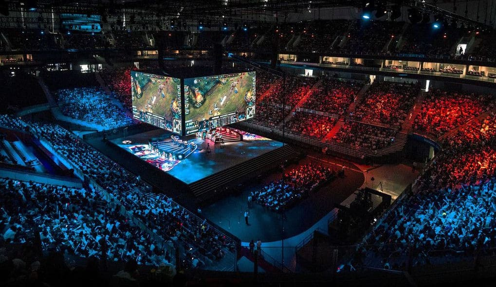
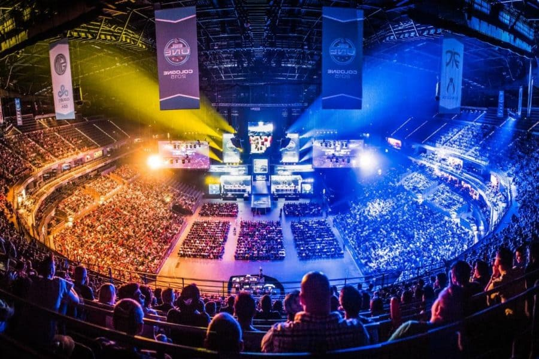
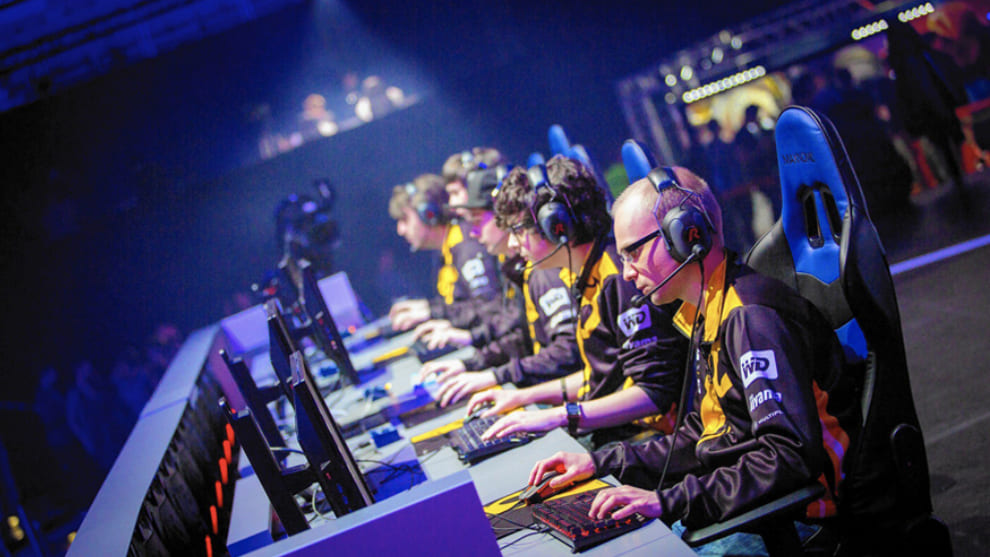

Los Negocios

Agencias de marketing, comunicación, relaciones públicas y organización de eventos enfocadas en este sector. Así como, creación de contenido en redes sociales, gestión de las emisiones de los partidos, edición de video, negociación con colaboradores y patrocinadores.
La Influencia

Muchos han conocido los eSports por los grandes y conocidos streamers como TheGrefg, que tiene en su propiedad un equipo propio o el tan aclamado Ibai que por su gran talento como caster ha participado en muchos de los grandes eventos como narrador de estos y gracias a su gran audiencia han hecho que los eSports tengan un gran reconocimiento
Los jugadores

SLos jugadores pueden perder mucho peso durante los torneos, y por ello deben cuidar su forma física. También es una forma de despejar la mente, ya que estos jugadores pasan largos periodos de tiempo delante de un ordenador, y a la larga produce cansancio mental.
Tal vez no es necesario tener un nivel de forma como un atleta, pero sí llevar a cabo una rutina que les permita desconectar después de muchas horas de juego.
Otro factor importante para el entrenamiento de los jugadores de eSports es el bienestar psicológico. Las competiciones de videojuegos requieren un gran nivel de concentración en la toma de decisiones durante el juego.
Por ello, el estado anímico del jugador es importante, ya que se exponen a situaciones de estrés de manera constante.